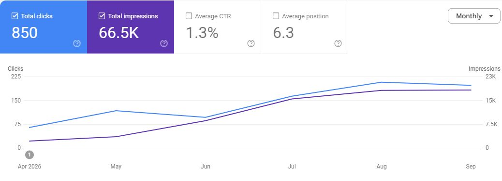
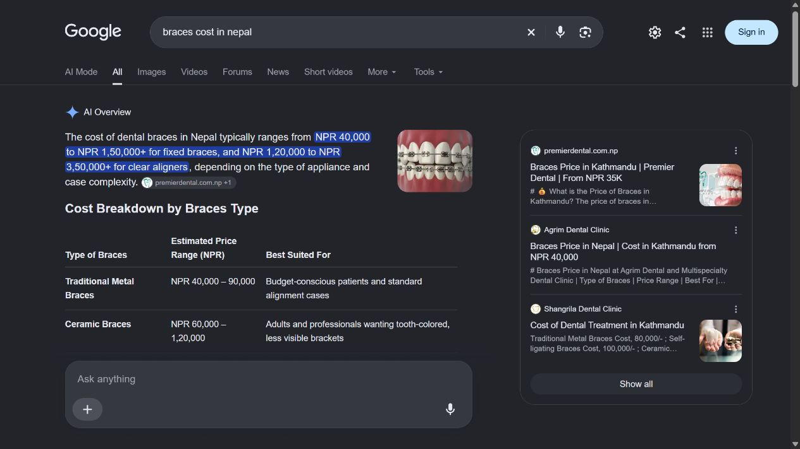
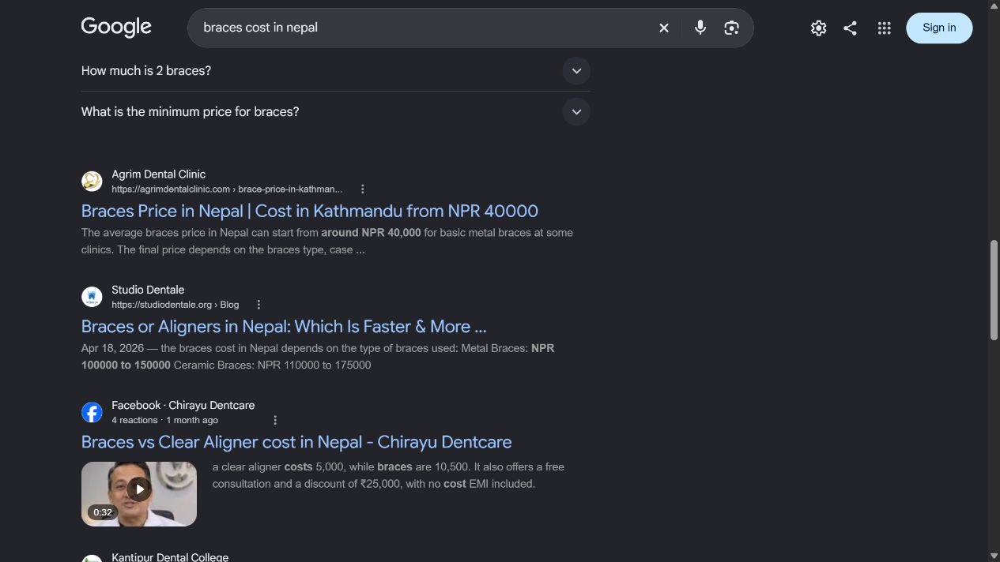
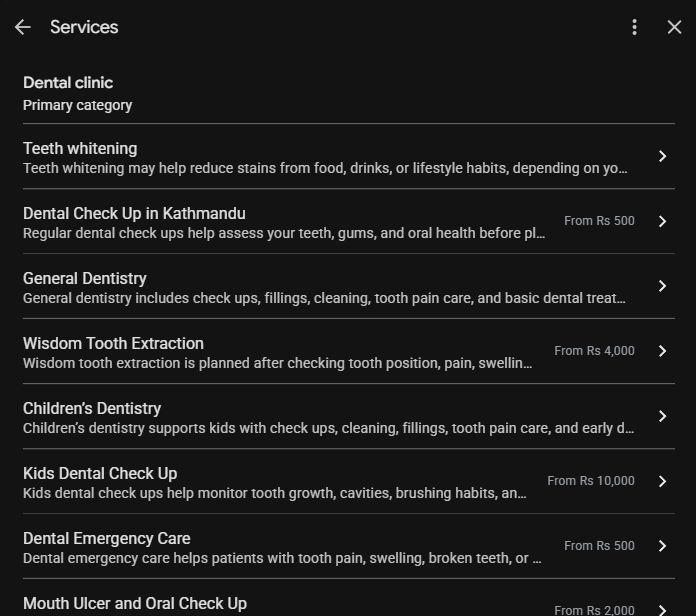

How people started finding Agrim Dental by treatment and location
Agrim Dental Clinic
Ghattekulo & Thamel, Kathmandu
850
Google Search clicks · April–September 2026
66,486 impressions · all queries


What changed in Search
Clicks from reported searches that excluded “agrim” rose from 27 in April–June to 183 in July–September 2026. Impressions went from 5,686 to 23,711. Over the full six months, the report showed 210 clicks and 29,397 impressions.
Google Search Console, Web search, April 1 through September 30, 2026. Queries containing “agrim” were excluded. Google may omit some queries from filtered reports.
AI Overview for “braces cost in nepal”

A search result for “braces cost in nepal”

Searches that brought people to the site
- “braces cost in nepal” · 24 clicks from 1,942 impressions
- “dental clinic near me” · 13 clicks from 1,681 impressions
- “dentist near me” · 9 clicks from 530 impressions
- “dental clinic kathmandu” · 7 clicks from 475 impressions

Agrim Dental Clinic has two Kathmandu branches, in Ghattekulo and Thamel. When I started working on SEO, people mostly found the site by searching for Agrim. I wanted the clinic to show up for people who were looking for a treatment or a dentist nearby. Agrim’s clinic locations
Two branches and one site
I worked on search visibility for the clinic’s treatments and locations. A person looking up the cost of braces needs information about the treatment. Someone ready to visit needs an address, hours and a way to contact the branch. Agrim’s site gives Ghattekulo and Thamel their own pages so each branch has a place for those details. Agrim’s site
Creating and verifying the Google Business Profile
I set up Agrim’s Google Business Profile from scratch and verified it. When you have two clinics, getting the branch details right matters. A person heading to Thamel should see the Thamel address, directions and contact details. That’s why I use the page for the branch as the link from its Maps listing.

What’s next
In November 2026, I’m planning a redesign of Agrim’s website and continuing the SEO work. I want people to find the treatment they’re looking for and reach the right branch from their phone.